Handmade Objects
Traditional Leather Wingback Recliner Chair with Brass Nailhead Trim
· 20th century
Price Upon Request

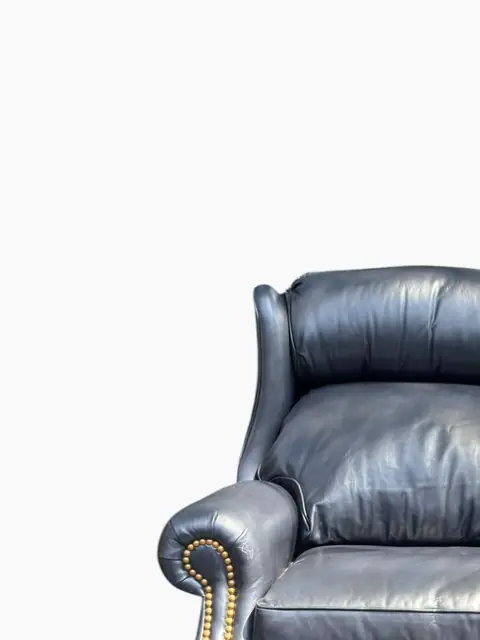
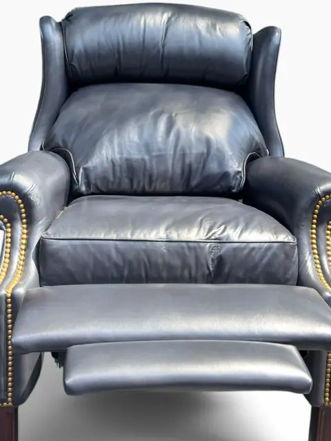
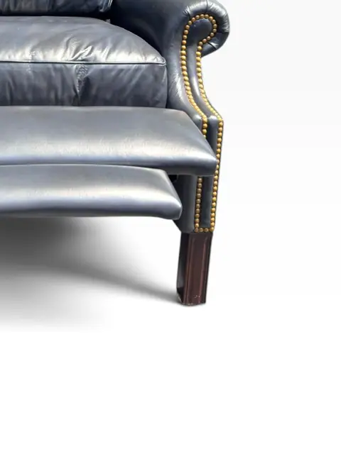
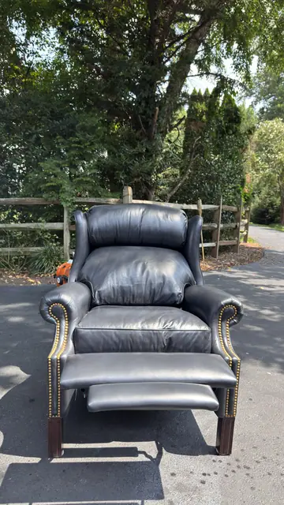
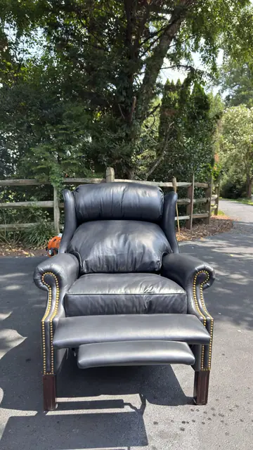
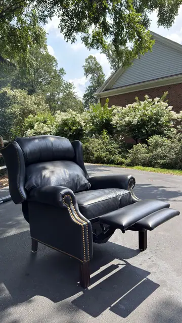
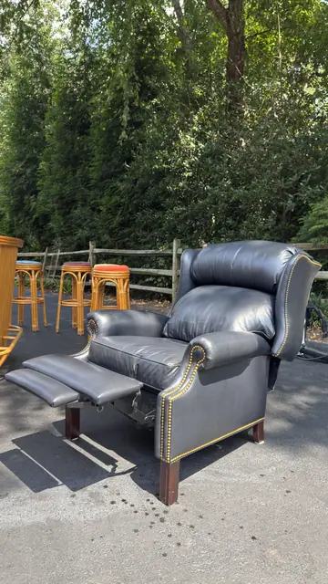
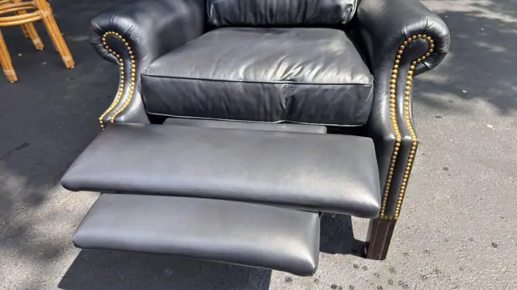
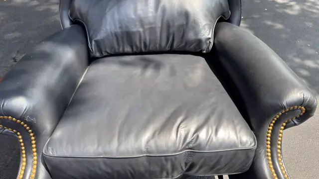
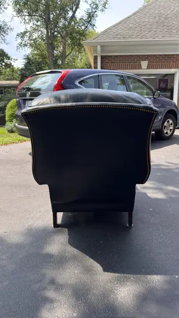
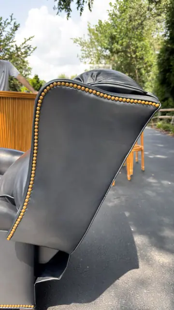
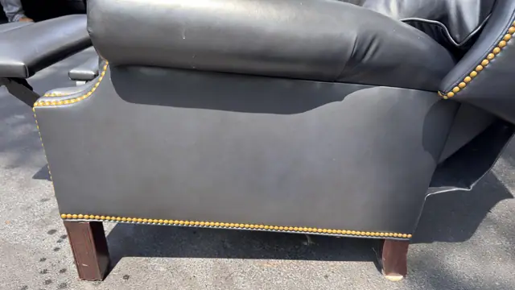
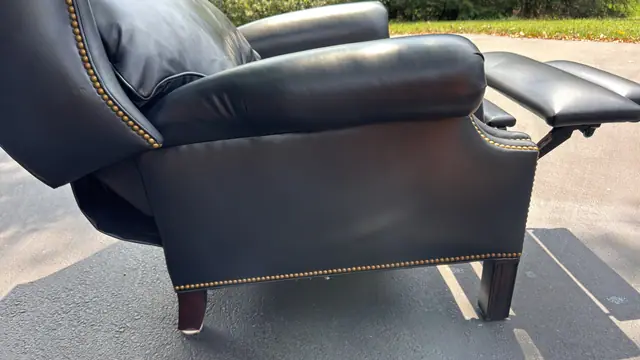
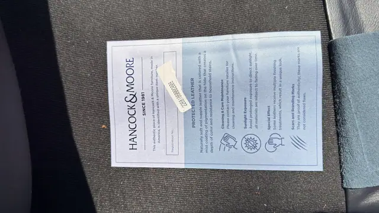
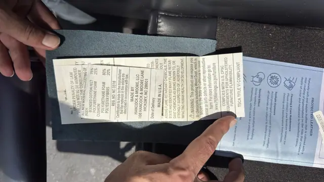
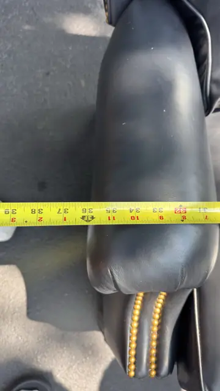
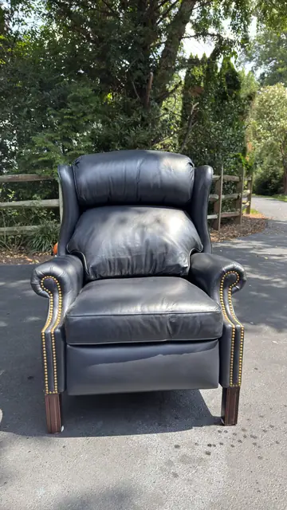
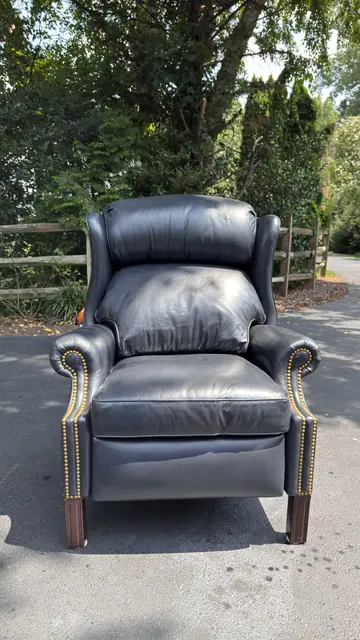
About the Item
A traditional wingback recliner upholstered in dark blue-grey leather with brass nailhead trim along the scrolled arms. Push-back reclining mechanism with extended footrest, raised on square tapered wood legs. A classic club chair in good vintage condition. No maker label visible. Height/depth not photographed with tape.
Details
- Creation Year:
- 20th century
- Medium:
- Leather, wood and brass
- Period:
- 20Th
- Condition:
- Offered in the condition shown in the photographs.
- Reference Number:
- VO-354